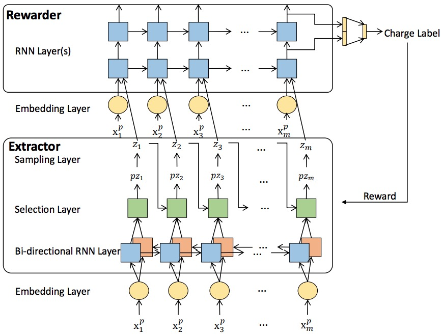
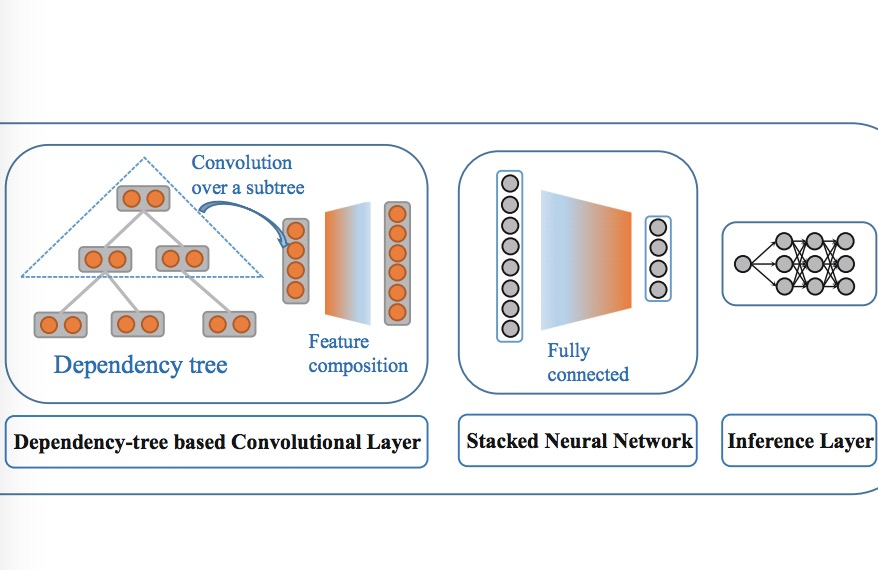

Hi! I am Hai ( [,etʃ e 'aɪ] ). I am a research assistant in Northeastern University (March to July, 2018) supervised by Prof. Lu Wang .
Before that, I obtained my bachelor degree from the School of Computer Science and Engineering (SCSE) of Beihang University (BUAA) in July 2017.
My research interests mainly lie in Machine Learning and Natural Language Processing, e.g. Natural Language Generation, Information Extraction and Semi-supervised Learning. I also have interests on improving interpretabilities of neural models in NLP domain.
News
[new] Released the data for our NAACL 2018 paper.
Publications
-
 Interpretable Charge Predictions for Criminal Cases: Learning to Generate Court Views from
Interpretable Charge Predictions for Criminal Cases: Learning to Generate Court Views from
Fact DescriptionsProceedings of the Conference of the North American Chapter of the Association for
Computational Linguistics (NAACL), 2018, Long paper, Oral. -

Interpretable Rationale Augmented Charge Prediction SystemProceedings of the International Conference on Computational Linguistics:
System Demonstrations (COLING), 2018. -

-

Dependency-tree Based Convolutional Stacked Neural Networks for Aspect Term ExtractionProceedings of the Pacific-Asia Conference on Knowledge Discovery and Data Mining
(PAKDD), 2017 -
 Homogenous Color Transfer Using Texture Retrieval and MatchingProceedings of the Conference of Pacific-Rim Conference on Multimedia (PCM), 2016.
Homogenous Color Transfer Using Texture Retrieval and MatchingProceedings of the Conference of Pacific-Rim Conference on Multimedia (PCM), 2016.
Professional Experience
-

Visiting Scholar
2018.3 - 2018.7 | Boston, USA
College of Computer and Information Science, Northeastern University
Education
-
B.Eng
2013.9 - 2017.6 | Beijing, China
School of Computer Science and Engineering, Beihang University
Services
-
External reviewer
ACL 2018, COLING 2018 (demo track), EACL 2017
Volunteer
NAACL 2018